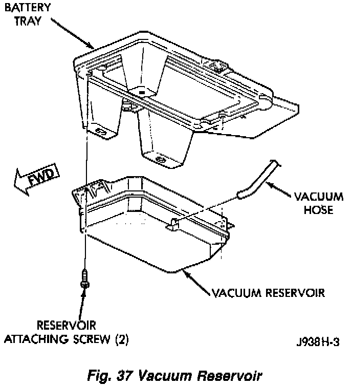

Operation CHARM
: Car repair manuals for everyone.
Русский
Home
>>
Jeep
>>
1997
>>
Grand Cherokee 4WD L6-4.0L VIN S
>>
Repair and Diagnosis
>>
Heating and Air Conditioning
>>
Vacuum Reservoir HVAC
>>
Locations
Vacuum Reservoir HVAC: Locations
Fig.37 Vacuum Reservoir (Viewed From Below):

The vacuum reservoir is located under the battery tray.